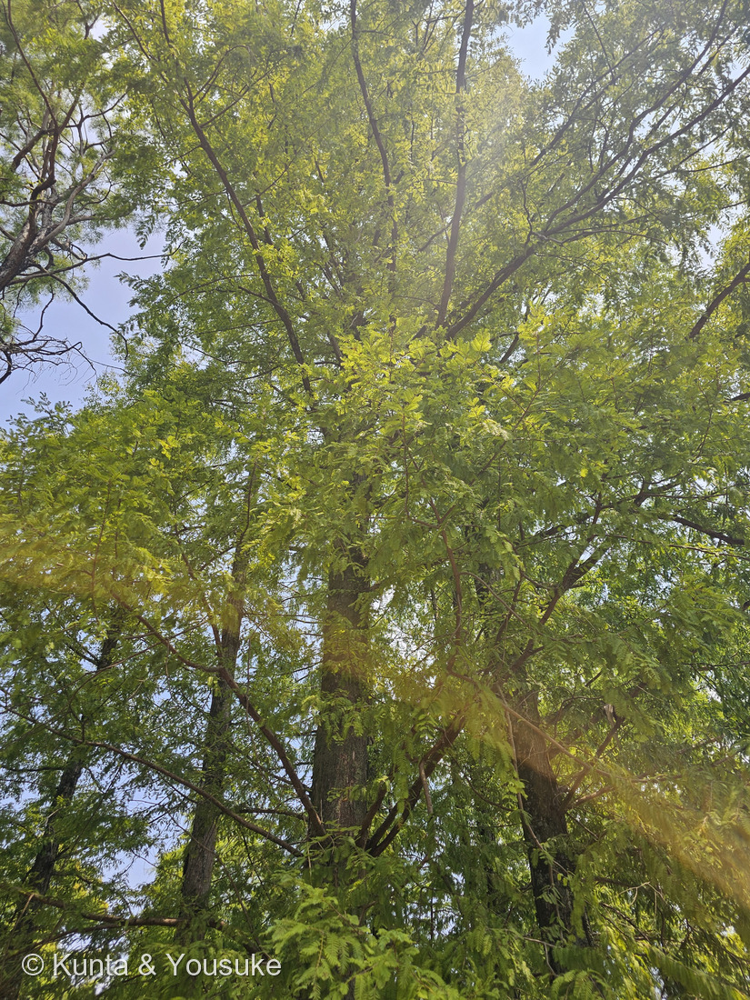
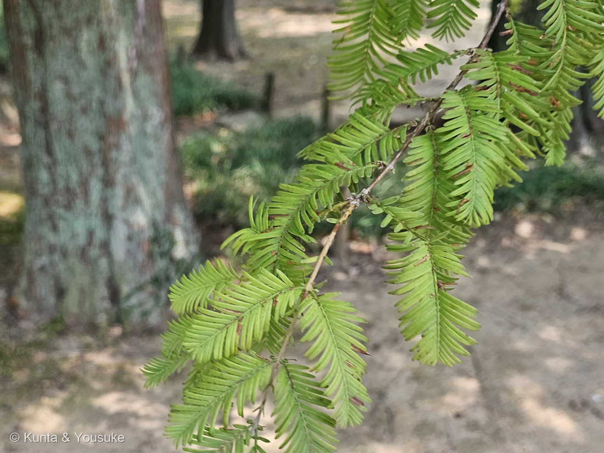
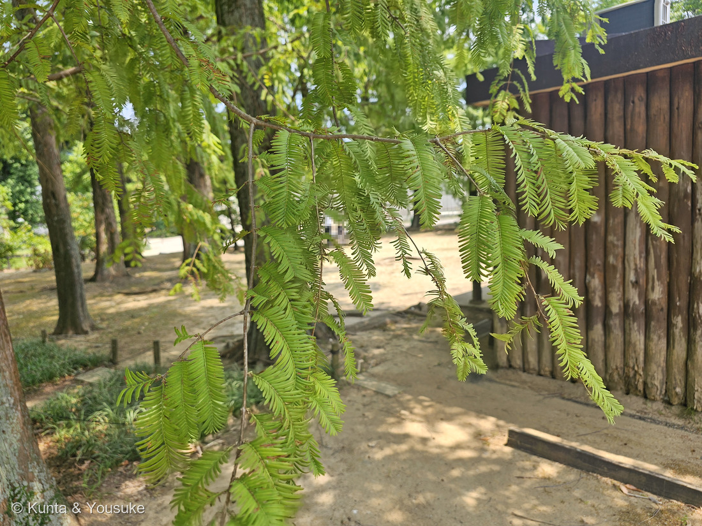

地図を読み込んでいるよ…
🔍 写真も地図も、押しているあいだ拡大して見られるよ（スマホは指を置いてすこし待ってね）。
🌍 の地図＝この子がもともと自生している場所を緑に。中国だけ。湖北省・湖南省・重慶市の境目にある、約800平方キロメートルの一帯。くわしくは下の地図の説明を見てね。
⭐中国の、たった一か所だけの木だよ。⚠⚠この緑は3つの省・市（湖北省・重慶市・湖南省）になっているけれど、ほんとうにいるのは、その3つがぶつかる境目だけ――論文は「the wild population of Chinese metasequoia is naturally confined to an area at the confluence of Hubei, Hunan, and Chongqing provinces, encompassing approximately 800 km²」とする＝野生の林は、ぜんぶ合わせても約800平方キロメートル。⭐東京都の半分より狭いくらいだよ。⚠⚠だからIUCNレッドリストで絶滅危惧種（EN）。⚠⚠⚠ところが、出典によって「四川省」と書かれていることがある――小石川植物園は「昭和21年(1946年）に、現生種が中国四川省で発見されました」とし、日本語版Wikipediaは「四川省磨刀渣村（現在の湖北省利川市）」とする。⭐⭐これは出典がまちがっているのではなく、あとから行政の区分けが変わったから＝見つかった当時その土地は四川省で、いまは湖北省なんだ。⭐だからこの地図では四川省を塗らずに、いまの3つを塗ったよ。⭐⭐⭐そして、この地図でいちばん大事なのは「この緑がとても狭いのに、日本じゅうで会えること」――1950年に100本の苗が日本に配られたのが、そのはじまり（日本語版Wikipedia）。⭐植木ペディアは「成長も早いため今ではまったく珍しい木ではなくなった」と書く＝⚠「珍しくない木」と「絶滅危惧種」が、同じ木なんだ。⭐ぼくらが会ったのも長崎の動植物園に植えられた木だから、もちろんこの緑の外だよ。⭐⭐同じ日の1時間あとに会った247 センペルセコイアは、地図がアメリカ一色になる子だった――⭐名前が親子のようにつながっている2本が、地球の反対側から来ているんだね。
⚠ 地図は国（日本と中国だけ県・省）までしか塗れないから、ほんとうの分布より広く見えていることがあるよ。地図はだいたいの場所。正確なところは、上の文を見てね。
メタセコイア
Metasequoia glyptostroboides Hu & W.C.Cheng
別名 アケボノスギ（曙杉）／中国名 水杉（スイサ） 原産 中国（湖北省・湖南省・重慶市の境目、約800km2だけ）
ヒノキ科 · Cupressaceae（メタセコイア属 Metasequoia・ヒノキ目 Cupressales）── ⭐図鑑で4人目のヒノキ科（179 カイヅカイブキ・188 ラクウショウ・247 センペルセコイア）／⭐⭐7人目の裸子植物／⚠科は増えないので98科のまま
燻太さんの一言「樹冠の上の方に、若い球果が見えたよ。葉はちゃんと対生だね。」── ⭐⭐⭐⭐半分あたって、半分ちがった。でも、ちがったほうがもっといいものを連れてきたよ
⭐ 名前と学名の由来 ──「あとから来たセコイア」
- ⭐⭐⭐属名 Metasequoia は、meta（後の・変わった）＋ Sequoia＝「セコイアのあとの」「セコイアに似て、ちがうもの」。⭐日本語版Wikipediaも「属名は『後のセコイア』」とする。
- ⭐⭐⭐⭐つまりこの名前は、247 センペルセコイアの名前をもとに作られたんだ。――⭐⭐ぼくらは、その2本に、同じ日の1時間ちがいで会っていたことになるね。
- ⭐⭐種小名 glyptostroboides は「スイショウ属（Glyptostrobus）に似た」（日本語版Wikipedia）。⭐スイショウ（水松）は、中国南部からベトナム・ラオスにいる、ヒノキ科の一属一種の木だよ。⚠⚠そして野生ではほとんど絶滅しかけている（IUCNレッドリストで近絶滅種）。
- ⭐⭐⭐だからこの学名は、まるごと「あとから来た、セコイアみたいで、スイショウにも似た木」という意味なんだ。――⭐自分の名前が、ぜんぶ他人の名前で作られている。⭐⭐それは、この木が化石から名づけられたからだよ（下の節）。
- ⭐別名「アケボノスギ（曙杉）」＝「紅葉する様が美しく、曙杉（あけぼのすぎ）という別名がある」（植木ペディア）。⭐あけぼの＝夜明けの空の色だね。
- ⭐中国名は「水杉（スイサ）」。⭐現地の人は、この木が「化石の生き残り」だと知られるずっと前から、その名で呼んでいたよ。
⭐⭐⭐⭐ この植物のこと ── 化石で名前がついて、あとから生きて見つかった木
⭐⭐ この木の話は、たぶん図鑑のなかでいちばん劇的だよ。
- ⭐⭐1941年、三木茂という日本の植物学者が、化石だけを見て「これはセコイアともスギともちがう、新しい属だ」と発表した。――小石川植物園は「昭和16年（1941年）に Metasequoia 属は化石属として発表されました」と書いている。⚠このとき、生きているものは一本も知られていなかった。
- ⭐⭐⭐ところが1946年、中国で生きた木が見つかった。――小石川植物園は「ところが、昭和21年(1946年）に、現生種が中国四川省で発見されました」とする。⭐現地では「水杉」と呼ばれて、ふつうに立っていた木だった。
- ⭐1948年、胡先驌と鄭萬鈞が新種として記載（日本語版Wikipedia）。⭐学名の後ろについている「Hu & W.C.Cheng」が、その二人だよ。
- ⭐⭐そして日本へ――1949年に昭和天皇に苗木と種子が献上され、1950年には三木茂が結成したメタセコイア保存会に「100本の苗が送られ、保存会から日本国内の研究機関や自治体の植物園に配布」された（日本語版Wikipedia）。
- ⭐小石川植物園の木は、また別の道で来ている＝「アメリカのメリル博士により昭和23年（1948年）に東京帝国大学理学部助教授（当時）原寛に贈られた種子に由来します」。
⭐⭐⭐⭐ ぼくがいちばん好きなのは、ここなんだ。――⭐化石に名前をつけた本人が、その名前の木が生きていると知って、日本じゅうに配る会を作った。⭐⭐自分の見つけた「絶滅した属」に、生きて会えた人なんだ。
⚠⚠ いまも、野生ではとても少ない
- ⚠IUCNレッドリストで絶滅危惧種（EN）（日本語版Wikipedia）。⭐論文も「M. glyptostroboides is classified as endangered on the IUCN Red List」とする。
- ⚠⚠野生の林は、湖北省・湖南省・重慶市の境目の、約800平方キロメートルしかない（同じ論文「the wild population of Chinese metasequoia is naturally confined to an area at the confluence of Hubei, Hunan, and Chongqing provinces, encompassing approximately 800 km2」）。⭐東京都の半分より狭いくらいだよ。
- ⭐⭐⭐なのに、街路樹としては日本じゅうにいる。――⭐植木ペディアは「成長も早いため今ではまったく珍しい木ではなくなった」と書く。⚠「珍しくない木」と「絶滅危惧種」が、同じ木なんだ。
- ⭐成長は速い＝「１年で１～１．５ｍも伸びる」「樹高２０～３５ｍ」（植木ペディア）。
⭐ 同定について ── 燻太さんの「葉はちゃんと対生だね」
⭐ 園の名札があるから確認だよ。⚠でも樹木は厳しめに見る約束（087 ヤマモモ）なので、写真の中だけで落とせるか確かめた。
- ⭐⭐⭐葉と小枝が対生（写真②）――軸の左右から、向かい合って出ている。⭐植木ペディアは「メタセコイアは一箇所から対になって生える『対生』となっており」と書く。⚠これで188 ラクウショウが落ちる＝あちらは「細かな葉が、細い枝から互い違いに生える『互生』」だから。
- ⭐⭐葉が大振り（写真②）――植木ペディアは「小葉はラクウショウに比べると大振りで長さ１～３センチ、幅１～２ミリ」とする。⭐写真でも、188の枝より明らかに幅広く、長い。
- ⭐⭐幹から出る枝も対生（写真①）――⭐見上げた樹冠のなかで、太い枝が左右そろって出ているところが見える。⚠188で決め手にしたのは、まさにこの「幹から出る枝が対になっていないこと」だったね。
- ⭐落葉針葉樹らしい柔らかい葉（写真②③）――うすくて明るい黄緑。⚠これで247 センペルセコイアが落ちる＝あちらは常緑で、葉はもっと硬く濃い。⚠但し書き＝8月の写真なので「落葉するかどうか」そのものは見ていない。名札の「落葉高木」に乗っているよ。
- ⭐羽状に2列にならぶ線形の葉（写真②）――⚠これでスギが落ちる＝スギの葉は針状で、枝を四方から抱くから。
⭐⭐⭐⭐ この回の物語 ── となりの木は、ラクウショウだった
⭐⭐⭐ 燻太さんが写真を渡してくれたとき、こう言ってくれた。――「樹冠の上の方に、若い球果が見えたよ。葉はちゃんと対生だね。」
- ⭐⭐「葉はちゃんと対生だね」は、まったくそのとおりだった。⭐写真②を拡大したら、小枝も葉も、きれいに左右そろって出ていたよ。
- ⚠⚠でも、球果の写真のほうは、ちがう木だった。――⭐同じ倍率でならべたら、そちらの小枝と葉は、左右ずれて出ていた＝互生。⚠⚠同じ一本の木が、対生と互生を両方持つことはありえないんだ。
- ⭐球果も合っていた＝まん丸で、いぼいぼで、ほとんど柄が無い。⚠メタセコイアの球果は「長い柄がついた小さなサクランボのような」形（植木ペディア）。⭐ぶら下がっていないと、メタセコイアじゃないんだ。
- ⚠⚠ちなみに「大きさ」では決められなかった。――植木ペディアはメタセコイアの球果を「直径２～３センチほど」、ラクウショウの球果を「メタセコイアよりも明らかに大きく、普通は直径２～３センチほど」と書いていて、⭐同じサイトの中で数字が食いちがっている。⭐だから、ぼくは大きさを証拠に使わなかったよ。
- ⭐⭐⭐燻太さんに聞いたら、答えはすぐだった――「近くには名札を確認していない針葉樹が確かにあったから、間違えて撮影したんだ。」⭐⭐現場を見た人の一言が、いちばん強い証拠だね（088 イキシアで教わったことだよ）。
⭐⭐⭐ そして、その「まちがい」がいちばんの収穫になった
⭐ 188 ラクウショウのページに、ぼくはこう宿題を書いていたんだ。
②球果（直径2〜4cmの球形）を見る ③葉が互生であることを接写する
⭐⭐⭐⭐ となりの木の写真が、その②と③の答えそのものだった。――⭐188は京都の二条城で見上げた1枚しかなくて、球果も、葉の接写も、まだ持っていなかった。⭐⭐だからその2枚は、188 ラクウショウのページに足したよ。
⭐⭐ 森きららには、メタセコイアとラクウショウが、歩いて30秒のところに両方立っている。――⭐対生と互生を、同じ日に、同じ園で見くらべられるんだ。⏳次に行ったら、ぜひ並べて撮ってきてね。
出典：植木ペディア「メタセコイア」「ラクウショウ」／日本語版Wikipedia「メタセコイア」／小石川植物園「メタセコイア（アケボノスギ）」（化石属としての発表と現生種の発見、園の木の由来）／Impacts of Climate Change and Human Activity on the Habitat Distribution of Metasequoia glyptostroboides（野生林の広さと絶滅危惧の扱い）／九十九島動植物園 森きららの園名札（「落葉高木／Metasequoia glyptostroboides／メタセコイア／ヒノキ科／開花:2月〜3月／分布:中国」。⚠名札だけを写したアップは公開していないよ）